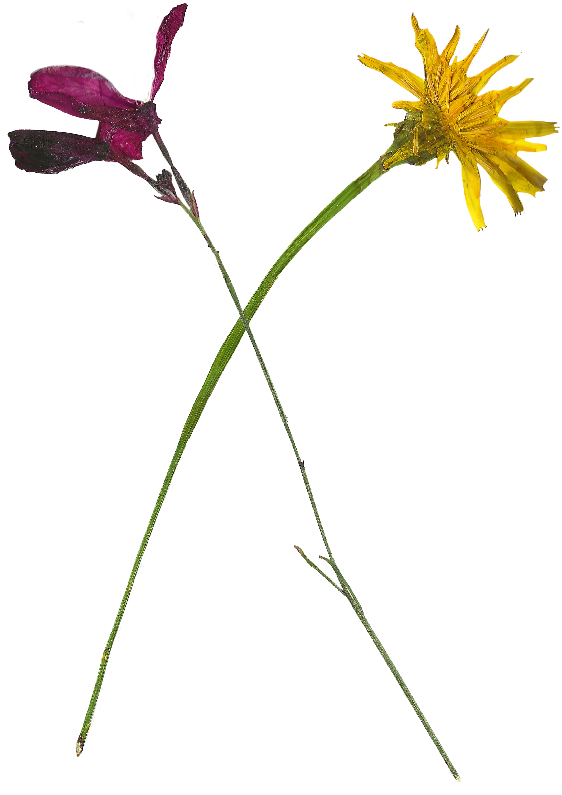

Crafting with Flowers
PART FOUR

After you've removed your botanicals from the press, they can be used for a multitude of purposes. They can be used for decoration on other craft projects such as book-making, pottery decoration or candle embellishment. They can also be individually used to create stamps, jewelery or coasters. If you plan to use your botanicals for another project, it is best to press them immediately before. This will ensure their freshness in other objects. Below, you will find a multitude of resources for further flower-pressing projects.